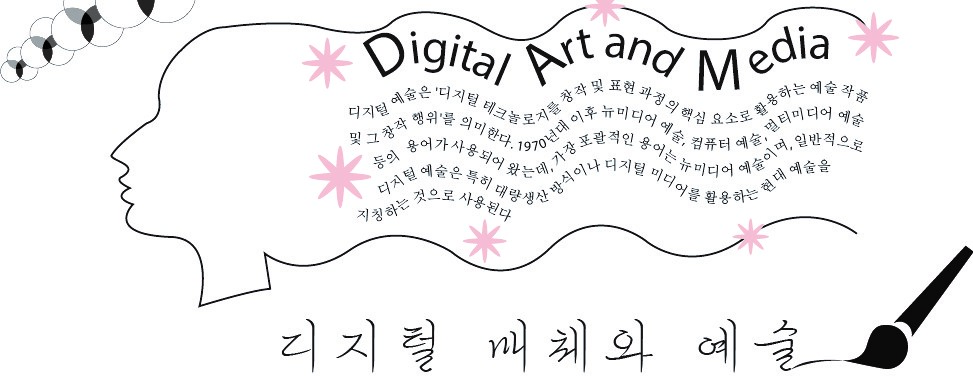

디지털 기술의 비약적인 발전은 인문학의 근본적인 변화를 요구하는 동시에 인문학의 가능성을 획기적으로
증대시키고 있다. 디지털 기술은 또한 오랜 세월 동안 쌓인 인문학의 지적 자산과 미적 감각, 창의력을
절실하게 필요로 하고 있다. 여기에 디지털 기술과 인문학이 화학적으로 결합할 필요성이 있다.
디지털인문예술 융합전공은 디지털 문명과 기술에 대한 인문학적 성찰과 함께 문화와 예술에 대한 감각을
바탕으로 디지털 매체를 활용하여 새로운 것을 창조하는 능력을 함양시킬 것이다.
디지털인문예술 융합전공은 21세기 정보사회에서 디지털 기술에 대한 이해와 인문학적 소양을 갖춘
창의적 인재를 양성할 것을 목표로 한다.